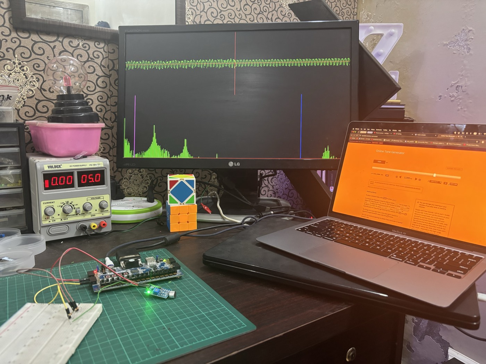

FFT and Audio Visualizer on FPGA
Overview
A 256-bin audio spectrum analyzer built entirely from scratch in raw Verilog on a Basys3 FPGA. There is no CPU, no operating system, and no vendor FFT core anywhere in the design — every resonator, filter, and pixel on the VGA display is hand-written, verified the hard way: synthesize, implement, flash, and read the screen, with no simulator in the loop. It's part two of a series that started with Neural Network on an FPGA, same no-CPU, no-vendor-IP constraint, this time applied to real-time DSP instead of ML inference.
Audio in
A generic electret-mic sensor module feeds the Basys3's XADC, which only accepts
0–1V on its analog input pins. The sensor's output swings well above that, so
an external 10kΩ/10kΩ resistor divider attenuates it before it reaches
JXADC pin 1, with the channel's N pin tied straight to
ground since the XADC is a differential input. The result is a clean 12-bit,
0–4095 sample, exposed by a driver that knows nothing about filters, VGA, or
the FFT downstream — just "here is the current level."
audio_driver.v
Why Goertzel, not a radix-2 FFT
The first version of this pipeline used Xilinx's own FFT LogiCORE IP. Getting it running required a runtime scaling schedule pushed through an AXI-Stream config port, with no fixed, compile-time option exposed anywhere in the IP wizard. Several rounds of debugging output that looked scattered and random eventually traced back to an all-zero scaling schedule silently overflowing inside the core — a black box with no way to check the fix against a bit-accurate datasheet diagram, and no simulator on hand to step through it. The vendor IP was dropped for a hand-written, fully self-contained 128-point radix-2 FFT instead, with scaling made provably safe by construction: dividing every butterfly output by two, every stage, bounds the result so it can never overflow.
The final design goes one step further and drops the FFT butterfly network too, in
favor of a bank of 256 Goertzel resonators. Both are legitimate ways to compute a
DFT and give identical per-bin magnitudes for a fixed set of bins, but Goertzel's
control logic is a plain nested loop — no bit-reversal addressing, no staged
twiddle-factor indexing — which matters a lot when the only way to test a
change is a full synthesize-implement-bitstream-hardware cycle, with nothing to
simulate against locally.
fft_view.v
The signal path
Analog audio in, a 1024×768 VGA frame out, three live views on screen at once.
01. Audio capture
XADC Wizard IP, single channel, continuous mode, unipolar, reading channel VAUX6.
audio_driver.v
02. Complementary lowpass / highpass split
Two single-pole IIR filters run on the same audio-rate signal. The lowpass is a
plain exponential moving average; the highpass reuses the exact same recurrence and
just subtracts it from the input, since input = lowpass(input) +
highpass(input) by construction — lower risk than inventing a second
filter equation blind. Both cutoffs are live-adjustable from the board: a switch
picks which filter, and two buttons step its cutoff up or down.
lowpass_filter.v, highpass_filter.v
03. Waveform view
The raw trace and the band-passed trace are drawn side by side in the top half of
the frame, so the effect of the live filter cutoffs is visible directly against the
unfiltered signal.
waveform_view.v
04. Spectrum view: 256 Goertzel resonators
Each of the 256 displayed bins runs its own Goertzel recurrence over a 512-sample
window, computing power (magnitude squared, no square root needed) rather than a
classic FFT butterfly pass. Bin 0 (DC) is skipped, so bins 1–256 cover the
whole unique half of a real-valued input's Hermitian-symmetric spectrum. Power gets
compressed with an approximate log2 before it becomes a bar height, so the display
has log-like dynamic range instead of blocky power-of-two jumps.
fft_view.v
05. Display composition
All three views tile onto one 1024×768@60Hz VGA frame: raw waveform top-left,
filtered signal top-right, the 256-bin spectrum along the bottom, with a blue and a
purple vertical marker tracking whichever filter's cutoff is currently being
adjusted.
top.v, vga_timing.v

Repository
Cleanly separated: the Vivado project, and the video explainer built alongside it.
- FFTspectrum/: the Vivado project — every hand-written Verilog module (
audio_driver,lowpass_filter,highpass_filter,waveform_view,fft_view,vga_timing,top) plus the generated XADC and clocking-wizard IP. - scenes/: the Manim scenes and narration script used to build the accompanying video, one folder per concept — sampling, Nyquist, filters, the DFT, the Goertzel algorithm, log compression.
- scripts/: release automation for publishing the video build.
References
What this was built on top of.
- 3Blue1Brown, But what is the Fourier Transform?: the intuition this project's approach to the DFT and Goertzel resonators is built on.
- Reducible, The Fast Fourier Transform: Most Ingenious Algorithm Ever?: the Cooley-Tukey butterfly algorithm this project's earlier hand-written FFT attempt was built against.
- Sebastian Lague, Coding Adventure: Sound (and the Fourier Transform): a practical, code-first walkthrough of turning raw audio into a spectrum, the same problem this project solves in Verilog instead of software.